BIENVENIDOS A NATHALY NAILS
Gracias por confiar en nosostros, aqui tu belleza es mi prioridad, me especializo en hacer que tus uñas
luzcan hermosas y elegantes, ofreciendo una amplia gama de servicios de manicura y pedicura.
Soy manicurista profecional y mi mision es resaltar tu estilo con un trabajo de calidad y atención personalizada.
PRESENTACION
Hola hermosa bienvenida a Nathaly Nails, aqui no solo te ponemos uñas si no tambien te ofrecemos momentos de relajacion,
de spa y autocuidado, para que te sientas hermosa y segura de ti misma.
Nuestros Servisios:
Studio Nathaly Nails " ponte bonita" ofrece los siguientes servicios: Manos Perfectas
• Manicura Rusa / Combinada: Limpieza profunda de cutículas para un acabado impecable y duradero.
• Gel Semi-permanente: Color vibrante y brillo extremo por más de 15 días.
• Uñas Acrílicas: Extensiones personalizadas en la longitud y forma de tu preferencia (Square, Coffin, Almond, Stiletto)
.
• Soft Gel / Polygel: Sistemas modernos, ligeros y de alta resistencia para lucir uñas naturales.
• Nail Art Personalizado: Diseños a mano alzada, cristales, efectos (espejo, aurora, ojo de gato) y encapsulados.
Pedicura y Spa
* Pedicura Estética / Spa: Limpieza, exfoliación, hidratación profunda y esmaltado para lucir unos pies suaves y saludables.
RETIROS Y CUIDADOS
* Retiro Seguro: Retiramos tu set anterior cuidando la salud de tu uña natural.
* Baño de Acrílico o Kapping: Reforzamiento para uñas naturales propensas a quebrarse.
Mirada Impactante (Cejas y Pestañas)
* Diseño de Cejas con Henna Semipermanente: Sombreado natural y definición perfecta para resaltar tu rostro.
* Pestañas 1x1 (Técnica Clásica): Efecto rímel natural, ideal para el día a día.
* Pestañas Híbridas: La combinación perfecta entre naturalidad y volumen sutil.
* Volumen Egipcio: Efecto tupido, elegante y con una textura única que profundiza la mirada.
* Efecto Hawaiano: Pestañas con un diseño fresco, libre y con puntas espigadas en tendencia.
COSTOS DE SERVICIOS
Manicura rusa $100
Gel semipermanente $100
Uñas acrílicas #1 y #2 $ 250
Del #3 y 4 $300
Soft gel/ polygel $250 dependiendo el número de largo
Nail Art $ 300 dependiendo efectos
Pedicura $200
Diseño de cejas $100
Pestañas clásicas $200 pestañas híbridas $220. Volumen Egipcio $ 250 efecto hawaiano $200
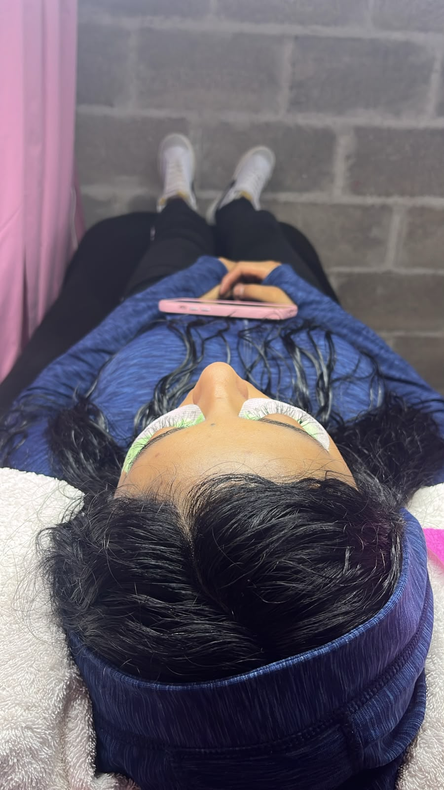
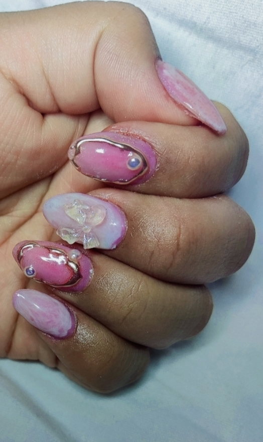
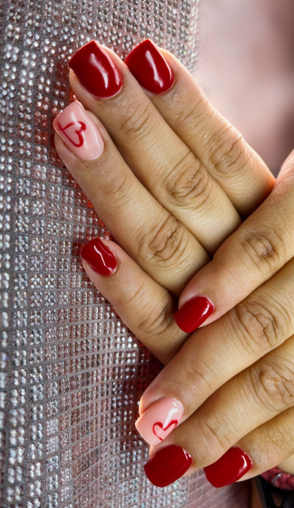
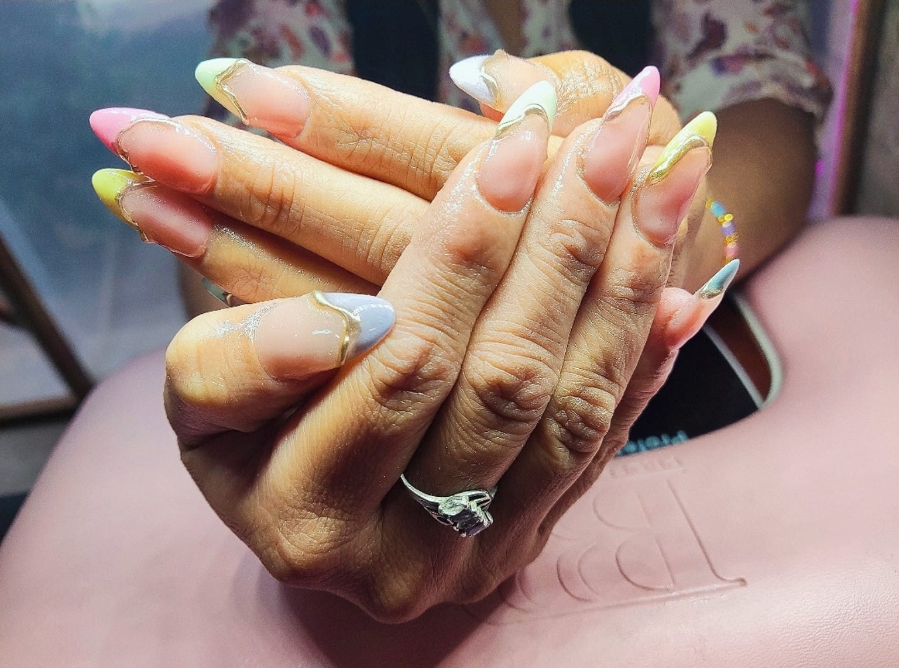
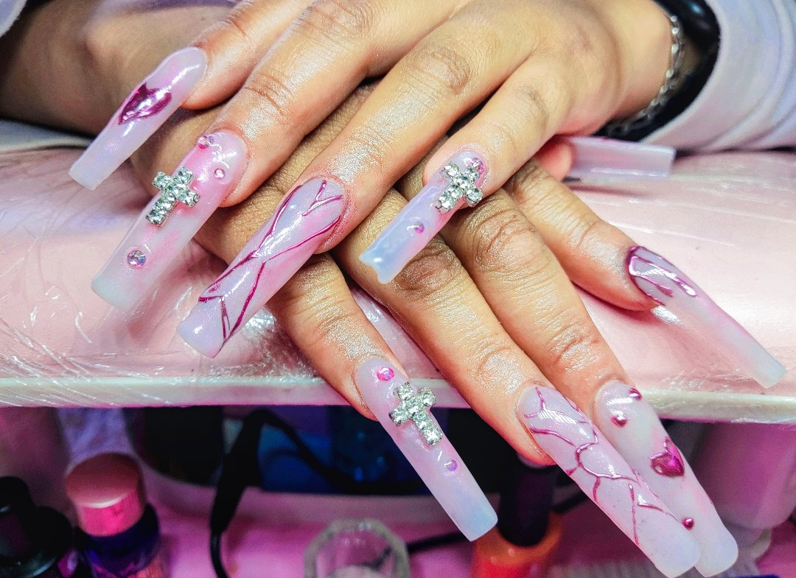
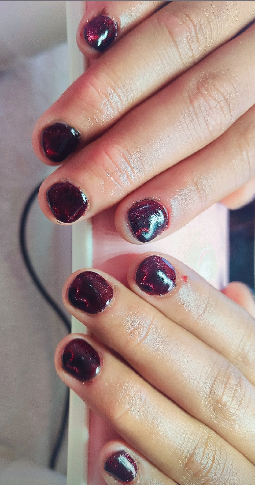
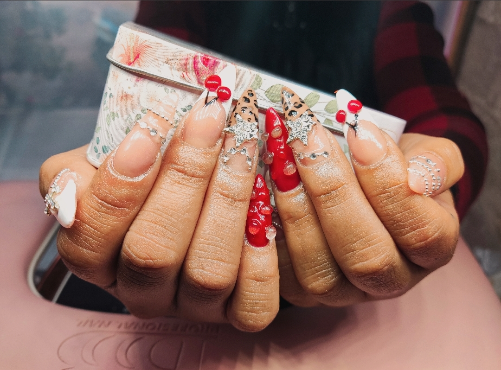
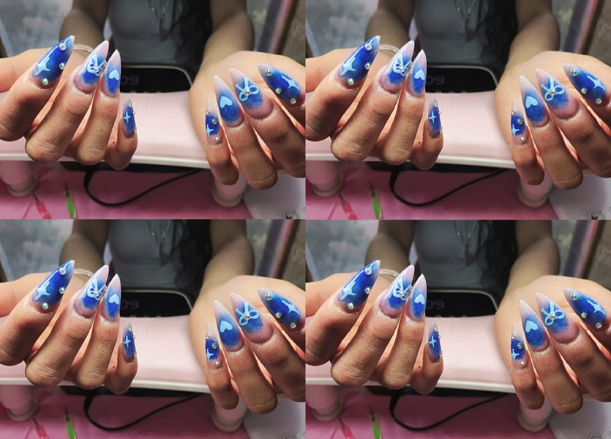
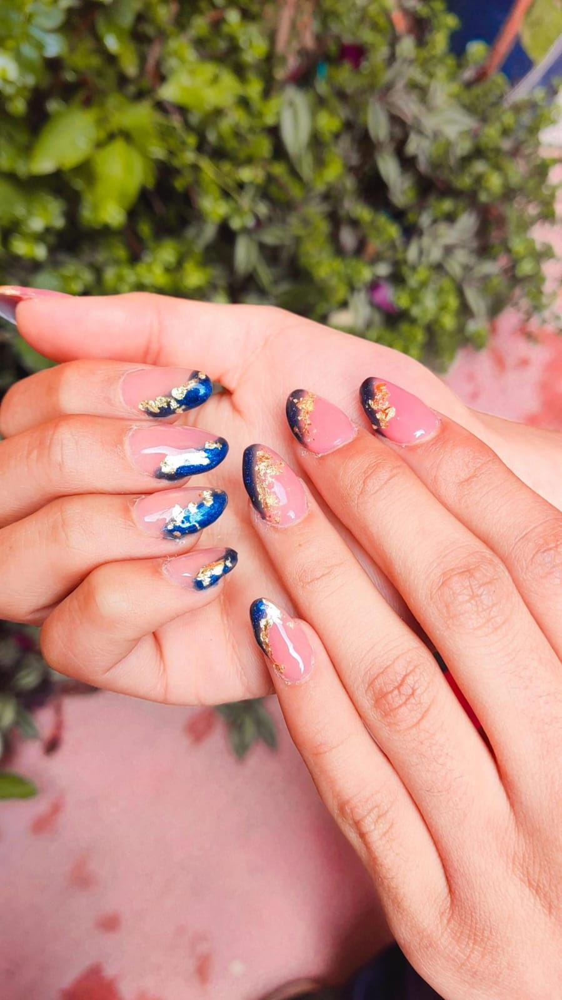
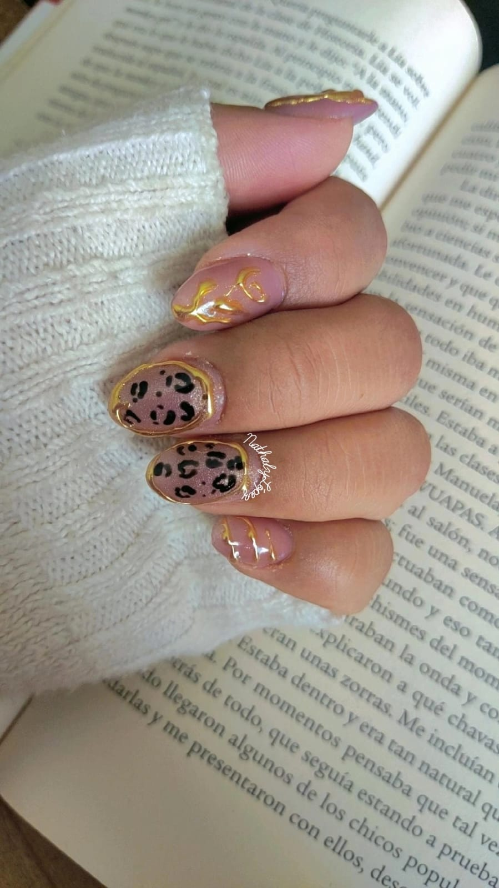
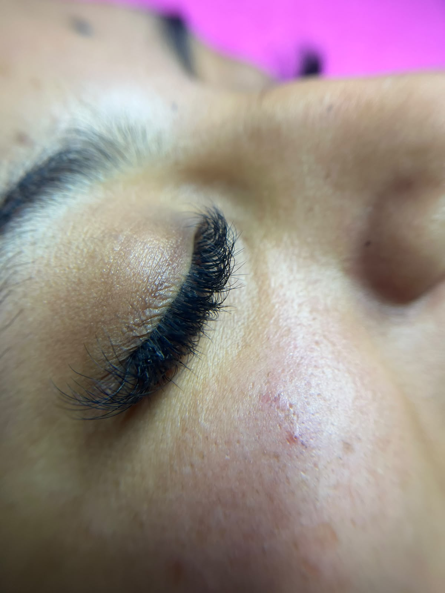